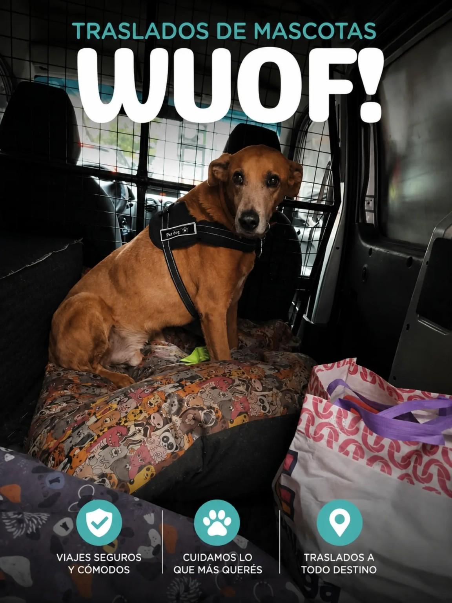

🐶
Veterinarias
Traslados seguros para consultas, controles, urgencias y revisiones veterinarias en Rosario.
TRANSPORTE ESPECIALIZADO EN ROSARIO
En WUOF realizamos traslados exclusivos para mascotas en un vehículo adaptado para brindar comodidad, seguridad y tranquilidad durante todo el recorrido.
SOMOS WUOF
Sabemos que no todos los viajes son iguales. Un control veterinario, un tratamiento, una cirugía o simplemente la necesidad de trasladar a tu mascota requiere un servicio pensado para ella.
Por eso contamos con un vehículo preparado para brindar un viaje cómodo, seguro y adaptado a cada situación.
Traslados seguros para consultas, controles, urgencias y revisiones veterinarias en Rosario.
Coordinamos viajes para estudios, rehabilitación, controles y tratamientos programados.
Reservá con anticipación el día y horario que mejor se adapte a vos y a tu mascota.
Realizamos traslados con especial cuidado para mascotas mayores, lesionadas o en recuperación.
No todos los viajes son al veterinario. También realizamos traslados a parques, hoteles, guarderías y otros destinos.
Trabajamos en toda la ciudad y alrededores, coordinando cada traslado de forma personalizada.
NUESTRO SERVICIO

VEHÍCULO ADAPTADO
Nuestro vehículo fue preparado para ofrecer un traslado cómodo, amplio y seguro para perros y gatos.
Cada traslado se realiza de manera personalizada, priorizando el bienestar de tu mascota desde que sale hasta que llega a destino.
¿CÓMO FUNCIONA?
Contanos qué mascota viaja, origen, destino y horario.
Definimos juntos todos los detalles del traslado.
Llegamos puntualmente y trasladamos a tu mascota con el cuidado que merece.
Solo tenés que escribirnos por WhatsApp indicando el lugar de origen, destino, día y horario. Nosotros coordinamos todo con vos.
Sí. El servicio está pensado para perros y gatos de distintos tamaños, siempre coordinando previamente las necesidades de cada mascota.
Realizamos traslados en Rosario y Gran Rosario. Si tu destino es diferente, consultanos.
Siempre que sea posible recomendamos coordinar con anticipación para asegurar disponibilidad.
CONTACTO
Escribinos y coordinamos el viaje de forma rápida y personalizada.
Hablar por WhatsApp341 228 8085
Rosario • Santa Fe • Argentina